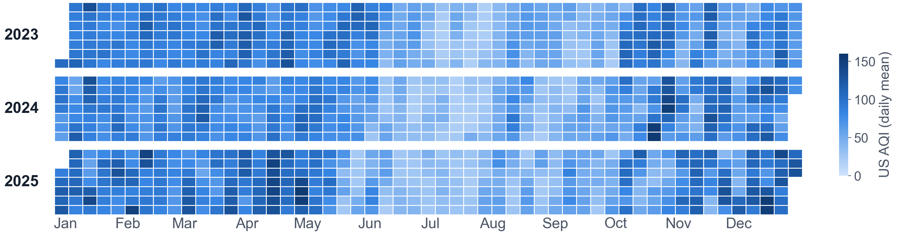
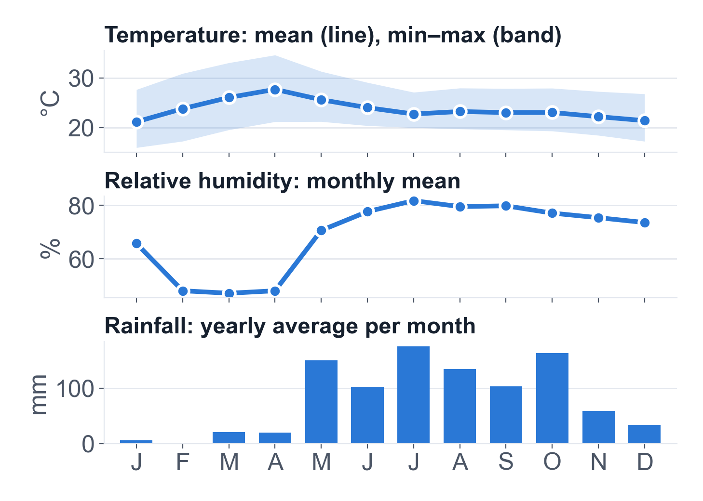
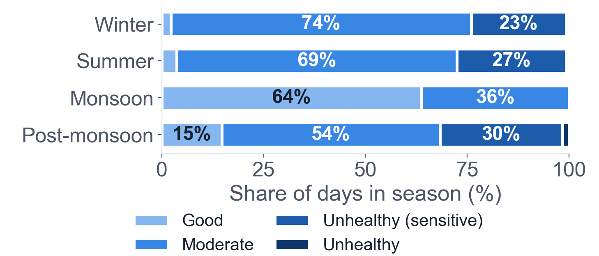
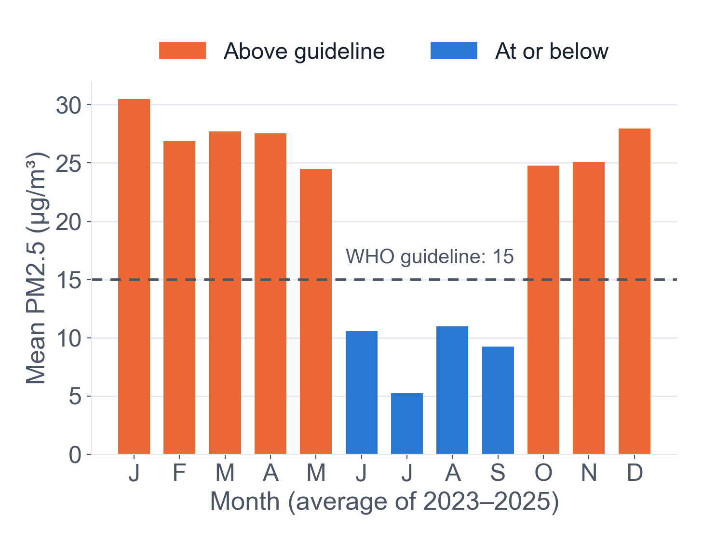
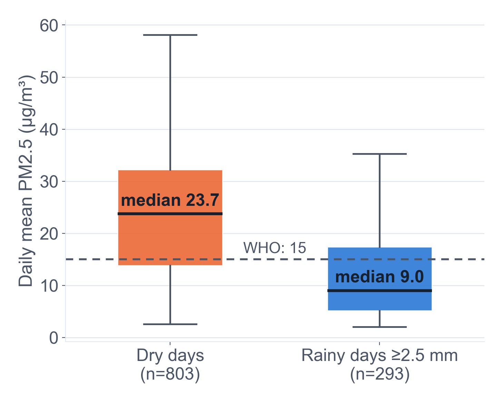

Problem statement
Bengaluru has hot dry spells, a heavy monsoon, and PM2.5 above the WHO guideline on 62% of days. How do daily temperature, humidity and rainfall go with air quality across the year, and when is the air worst?
Objectives
- Describe seasonal weather patterns.
- Measure how air quality varies by month and season.
- Compare air quality on rainy and dry days.
- Check the data against WHO and CPCB limits.
Data collection and source
Public data, not collected by our group.
- Weather: Open-Meteo Historical API (ERA5).
- Air quality: Open-Meteo Air Quality API (CAMS).
- Place: Bengaluru (12.97° N, 77.59° E).
- Period: 1 Jan 2023 – 31 Dec 2025.
- Sampling: all hourly values, made daily.
- Downloaded: 11 Nov 2026.
Limit: modelled grid values, not readings from a ground station.
Dataset description
1,096 daily records · 10 attributes
| Attribute | Unit |
|---|---|
| Temperature: mean, max, min | °C |
| Relative humidity (mean) | % |
| Rainfall (daily total) | mm |
| PM2.5, PM10, NO₂, ozone (mean) | µg/m³ |
| US AQI (mean) | 0–500 |
Derived: season, AQI category, rainy-day flag (≥ 2.5 mm).
Data cleaning and checks
- Missing values: 0 of 10,960 cells.
- Duplicate dates: 0.
- Temperature order: min ≤ mean ≤ max.
- Valid ranges: humidity 0–100 %, no negatives.
- Outliers: kept as real extremes (e.g. 39.5 °C, 1 May 2024).
Daily air quality, 2023–2025

Heatmap. Each square is one day. Pale (low AQI) squares fill Jun–Sep every year; darker squares dominate Jan–May and Oct–Dec. Highest day: 2 May 2025 (AQI 156).
Key findings
Monsoon air was cleanest. 64% of Jun–Sep days rated “Good”, against 6% of other days.
Dry days had higher PM2.5. Median 23.7 vs 9.0 µg/m³ on rainy days (Spearman ρ = −0.58).
Above the WHO guideline. PM2.5 passed 15 µg/m³ on 675 of 1,096 days, and the monthly mean in 8 of 12 months. CPCB limit (60): 2 days.
Days with AQI above 100, none in Jun–Sep. Ozone: 92 (summer) vs 44 µg/m³ (monsoon).
Associations in observational data, not proof of cause and effect: wind, traffic and burning are not in this dataset.
Temperature, humidity, rain

Line and bar. Temperature peaks in Apr (27.7 °C) and is lowest in Jan (21.1 °C). Humidity is lowest in Mar (47%) and highest in Jul (82%). Rain falls mostly May–Oct.
AQI category by season

Stacked bar. Monsoon: 64% Good, none above Moderate. Other seasons: 54–74% Moderate, 23–30% Unhealthy for sensitive groups.
PM2.5 by month

Bar. Only Jun–Sep are at or below the WHO guideline. Lowest: Jul (5.2); highest: Jan (30.5). May has heavy rain yet stays above the guideline, so rain alone does not explain the pattern.
Conclusion
Over 1,096 days, Bengaluru’s air quality followed the seasons. It was cleanest in the monsoon (Jun–Sep) and above the WHO PM2.5 guideline in the other eight months.
Rainy and humid days went with lower PM2.5, but this is an association in modelled data. Next step: check it against ground-station data over more years.
PM2.5 on dry and rainy days

Box plot. Median PM2.5 is 9.0 on rainy days and 23.7 on dry days. Dry days spread wider and reach higher values.
Recommendations
1. Time health advisories to the dry months. All 199 days with AQI above 100 fell in Oct–May. Warn sensitive groups and plan outdoor events around it.
2. Do not wait for rain. Plan emission and dust control for Oct–May, and collect source data (traffic, construction, burning) to decide where to act.
3. Validate before policy use. Compare with CPCB station readings and extend to 5+ years.